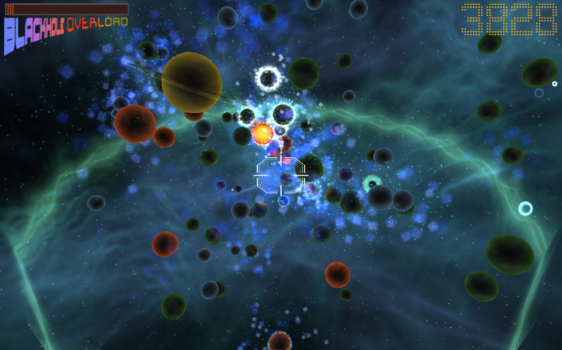

StarPool is a game jam project (the Gaité Lyrique Jam), made in 72 hours. My work here consisted of audio assets creation and music composition, in accordance with the vision and wishes of the team.

My available time only let me do an audio integration with Unity 4's available tools and some scripting, but the goal was to put the accent on the mayhem and the flipper side of things, which was done by having a light impact sound for each collision and more complex sounds linked to arcade feelings, like the bumper bells or the wave generator score indicator sounds.
Click here to download a Windows build of the game
The team : Emilie Mavel (Producer and community management) François Rizzo (Game Design) Judicael Abecassis (Programmation) Benjamin Rigotti (Visuals and 3D modelling) Support : Vincent Swaenepoel and Lucien Catonnet (Programmation) The game was exposed to the public for two weeks in the Gaité Lyrique in Paris as one of the winners picked from the jam entries, and people seemed to have fun with the title, which is the most important. (Realised in 2015)